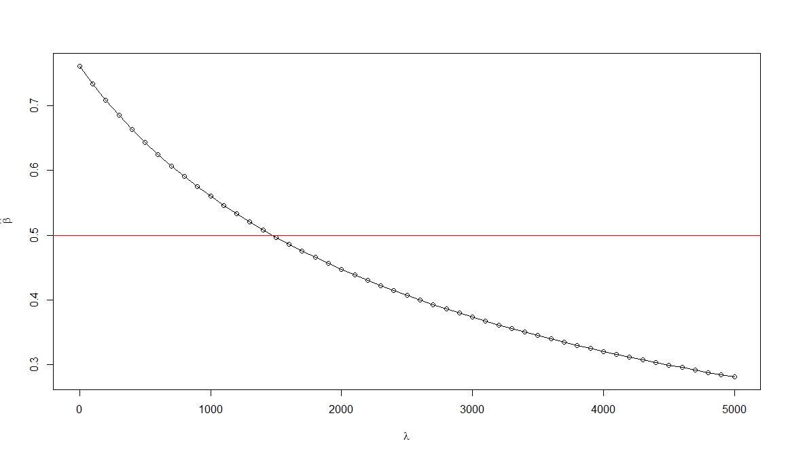

Simulation study
Shengtong Han
Last updated: 2017-04-11 Code version: ea8217c
Data Generation
Basically, there are two sequential levels when generating the data
- gene level: \(U_i\) denote the risk status of gene \(i\), \(U_i \sim Ber(1, \delta)\). All genes share the same risk probability \(\delta\).
- variant level:
- \(U_i=0\), all variants for gene \(i\) are non-causal, which is under null hypothesis. AF \(q_{ij} \sim Beta(\alpha_0, \beta_0)\), \(X_{1ij}+X_{0ij} \sim Pois (N1+N0, q_{ij})\), (alternatively, \(X_{1ij} \sim Binom(N1, q_{ij}); X_{0ij} \sim Binom(N0, q_{ij})\)); then filter out variants if \(X_{1ij}+X_{0ij}=0\).
- \(U_i=1\), gene \(i\) is a causal gene, the variant \((i,j)\) whose risk status is denoted by \(Z_{ij}\) is generated as \(Z_{ij} \sim Ber(1, \pi(\beta))\), \(\pi(\beta)\) is a function linking annotations to the probability of being causal.
- \(Z_{ij}=0\) (which is under null), given the generated \(X_{1ij}+X_{0ij}\), split into case and controls by conditional binomial distribution, with \(p=\frac{N1}{N1+N0}\)
- \(Z_{ij}=1\) (which is under alternative), AF \(q_{ij} \sim Beta(\alpha, \beta)\), \(\gamma_{ij} \sim Gamma(\bar{\gamma}*\sigma, \sigma)\), given generated \(X_{1ij}+X_{0ij}\), split into case and control by conditional binomial distribution with \(p=\frac{N1*\gamma_{ij}}{N1*\gamma_{ij}+N0}\).
- \(U_i=0\), all variants for gene \(i\) are non-causal, which is under null hypothesis. AF \(q_{ij} \sim Beta(\alpha_0, \beta_0)\), \(X_{1ij}+X_{0ij} \sim Pois (N1+N0, q_{ij})\), (alternatively, \(X_{1ij} \sim Binom(N1, q_{ij}); X_{0ij} \sim Binom(N0, q_{ij})\)); then filter out variants if \(X_{1ij}+X_{0ij}=0\).
Filtering step: filter variants that have null variant counts in both cases and controls.
Notations:
- N1, N0 are sample sizes in cases and controls
- \(q_{ij}\) is allele frequency for variant \((i,j)\)
- \(\bar{\gamma}\) relative risk
\(\pi(\beta)\) is the link function between annotations and prior probability and the interest is in estimating \(\beta\).
Parameter estimation
Case 1: One annotation feature
Paramster settings:
This is the simplest case in that every variant has one annotation feature if any. Set \(\beta=0.5\), \(\bar{\gamma}=10\) to make signal strong with burden close to 10; 80% elements of of Ajk are 1.
likelihood function:
If the feature has one dimension, the objective likelihood function would be simple to be optimized using common R packages. The log likelihood as a function of \(\beta\) (true \(\beta=0.5\))is as  .
.
This plot tells us the likelihood only has one mode in one dimension case. It looks like \(\beta\) is overestimated by R package-BFGS. With the fixed randomly generated data, run BFGS 50 times with random initials. The mean of \(\hat{\beta}_{MLE}=0.7631\) and SD=2.344796e-05.
Effect of Sparsity of \(A_{jk}\) (\(k\) is the number of features, here \(k=1\)) on MLE of \(\beta\)
Set \(\beta_{true}=0.5\), vary the sparsity of \(A_{jk}\), i.e., the ratio of 0’s in \(A_{jk}\). Define sparsity rate as the ratio of 0’s in each feature category.
| Sparsity rate | 90% | 80% | 70% | 60% | 50% | 40% | 30% | 20% | 10% | 0 |
|---|---|---|---|---|---|---|---|---|---|---|
| \(\hat{\beta}_{MLE}\) | 0.3802 | 0.4499 | 0.5845 | 0.5420 | 0.5829 | 0.64444 | 0.6817 | 0.7608 | 0.7941 | 0.8896 |
When All entries of \(A_{jk}\) are zero, \(\tau_j=\frac{1}{2}\), regardless of whatever values of \(\beta\) and the likelihood function is a constant of \(\beta\). Thus \(\widehat{\beta}\) can be anywhere.
Set \(\beta_{true}=0.2\).
| Sparsity rate | 95% | 90% | 85% | 80% | 75% | 70% | 65% | 60% | 55% | 50% | |
|---|---|---|---|---|---|---|---|---|---|---|---|
| \(\hat{\beta}_{MLE}\) | 0.3075 | 0.2259 | 0.3481 | 0.3944 | 0.3677 | 0.4167 | 0.3956 | 0.4331 | 0.4565 | 0.4091 |
Important Note:
There are two variables affecting estimate of \(\beta\), sparsity of \(A_{jk}\) and \(\beta_{true}\). (1) \(\beta\) cannot be set too large, say >10 because it controls the probability of a variant of being causal. Consider an extreme case where all variants are truly causal risk variants. The likelihood of the data is close to the product of Bayes factor of every variant, free of \(\beta\) value. Any large enough \(\beta\) will give the same likelihood. (2) Sparsity of \(A_{jk}\) will certainly influences the estimate of \(\beta\). The less sparsity, the more information will be used, the more accurate the estimate will be.
Introducing \(\ell_2\) penalty.
The same parameter setting. Sparsity rate is 20%. \(\beta_{true}=0.5\). 
With this setting, very large tunning parameter \(\lambda>1000\) should be used to get the good estimate of \(\beta\).
Ajk=rep(0, (num.gene*m))
Ajk[sample(length(Ajk), (0.8*length(Ajk)))]=1
############## generate beta
beta.true=numeric(anno.num)
beta.true[1]=0.5
############# compute tau: risk of every variant being risk variant
tau.true=exp(Ajk*beta.true)/(1+exp(Ajk*beta.true))
Ui=rbinom(num.gene, 1, delta)
all.data=list(); var.orig.index=numeric(); var.orig.index[1]=NA
for (i in 1:num.gene)
{
data=gene.simu(N0, N1, m, alpha0, beta0, alpha, beta, gamma.mean, sigma, pi=tau.true[((i-1)*m+1):(i*m)], Ui[i], num.group, split.ratio)
all.data[[i]]=data
var.orig.index=c(var.orig.index, (i-1)*m+data$var.index)
}
var.orig.index=var.orig.index[-1]
Ajk.effect=Ajk[var.orig.index]
################### calculate bayes factor for every variant
k=0; BF.var=numeric(); var.count=matrix(nrow=(m*num.gene), ncol=2)
for (i in 1:length(all.data))
{
for (j in 1:ncol(all.data[[i]]$geno))
{
k=k+1
BF.var[k]=BF.var.inte(sum(all.data[[i]]$geno[all.data[[i]]$pheno==1,j]), sum(all.data[[i]]$geno[all.data[[i]]$pheno==0,j]), bar.gamma=6, sig=sigma, N1, N0)
var.count[k,]=c(sum(all.data[[i]]$geno[all.data[[i]]$pheno==1,j]),sum(all.data[[i]]$geno[all.data[[i]]$pheno==0,j]) )
}
} # end of i
var.count=var.count[-((k+1):nrow(var.count)),]
###############################
################################
num.var=length(BF.var)
lambda.range=rep(0, 50)
error=numeric()
beta.fin.est=numeric(length(lambda.range))
###################################
lambda=0
beta.range=seq(0, 100, by=10)
log.lkhd=numeric(length(beta.range))
for (i in 1:length(beta.range))
log.lkhd[i]=objec.func(beta.range[i])
plot(beta.range, log.lkhd, type="o", xlab=expression(beta), ylab="log(likelihood)")
abline(v=beta.true, col=2)
###################################
for (k in 1:length(lambda.range))
{
cat(k, "is running", "\n")
lambda=lambda.range[k]
beta.est=runif(anno.num, -1,1)
theta.est=optim(beta.est, objec.func, deriv.objec.func, method="BFGS", control=list(fnscale=-1))
beta.fin.est[k]=theta.est$par
# theta.est=DEoptim(fn=objec.func.min, lower=rep(-1, anno.num), upper=rep(200, anno.num), control=list(NP=100, itermax=100,trace=FALSE))
# beta.fin.est[k,]=theta.est$optim$bestmem
error[k]=sum((beta.fin.est[k]-beta.true)^2)
}Case 2: Two Annotation features
\(K=2\). Set \(\beta_1=0.05, \beta_2=0.7\). Other parameters are the same as in Case 1.
MLE of \(\beta\).
use BFGS method.
Session information
sessionInfo()R version 3.2.2 (2015-08-14)
Platform: x86_64-w64-mingw32/x64 (64-bit)
Running under: Windows 7 x64 (build 7601) Service Pack 1
locale:
[1] LC_COLLATE=English_United States.1252
[2] LC_CTYPE=English_United States.1252
[3] LC_MONETARY=English_United States.1252
[4] LC_NUMERIC=C
[5] LC_TIME=English_United States.1252
attached base packages:
[1] stats graphics grDevices utils datasets methods base
loaded via a namespace (and not attached):
[1] backports_1.0.5 magrittr_1.5 rprojroot_1.2 tools_3.2.2
[5] htmltools_0.3.5 yaml_2.1.14 Rcpp_0.12.1 stringi_0.5-5
[9] rmarkdown_1.3 knitr_1.15.1 git2r_0.18.0 stringr_1.2.0
[13] digest_0.6.8 evaluate_0.10 This R Markdown site was created with workflowr